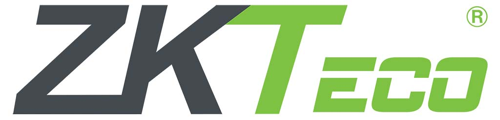

SISTEMA DE ACCESO
Productos
Con el objetivo de ofrecer a nuestros clientes productos de alta calidad y confiable ofrecemos las siguientes marcas.
ZKTeco es una multinacional con sede en Shenzhen, China. Fue fundada en 1985 y a mediados de los años 2000 llego a ser muy reconocida en el mercado de los sistemas de tiempo y asistencia. En la actualidad desarrolla, fabrica, soporta y vente dispositivos de bioseguridad y software. Para conocer todos los productos que ofrece la marca haga click aquí
Instalación y Mantenimiento de sistemas de Acceso
 Nuestro personal de Instalación y mantenimiento está compuesto por profesionales, técnicos, tecnólogos e ingenieros. Aunque el personal tiene unas actividades bien definidas como montaje, configuración, revisión, acondicionamiento y reparación de las conexiones, también está en la capacidad de brindarle a su empresa asesoría sobre posibles soluciones que ayuden a optimizar el funcionamiento del sistema.
Nuestro personal de Instalación y mantenimiento está compuesto por profesionales, técnicos, tecnólogos e ingenieros. Aunque el personal tiene unas actividades bien definidas como montaje, configuración, revisión, acondicionamiento y reparación de las conexiones, también está en la capacidad de brindarle a su empresa asesoría sobre posibles soluciones que ayuden a optimizar el funcionamiento del sistema.